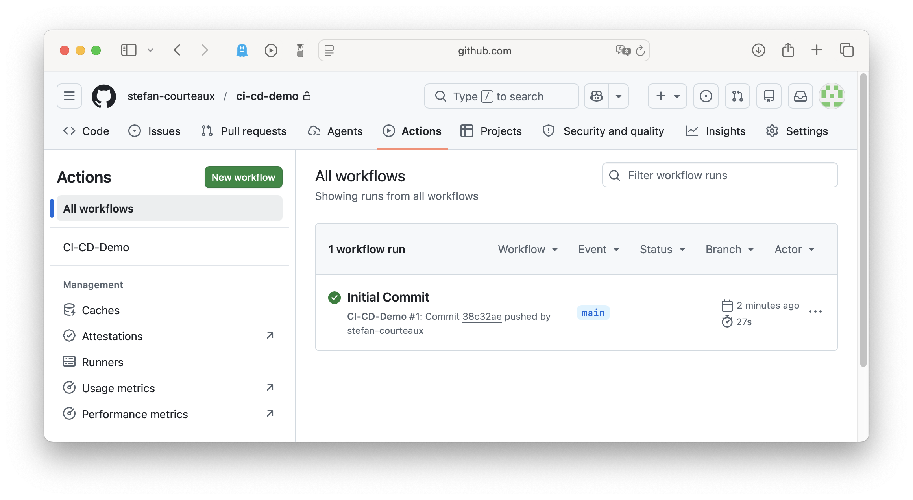
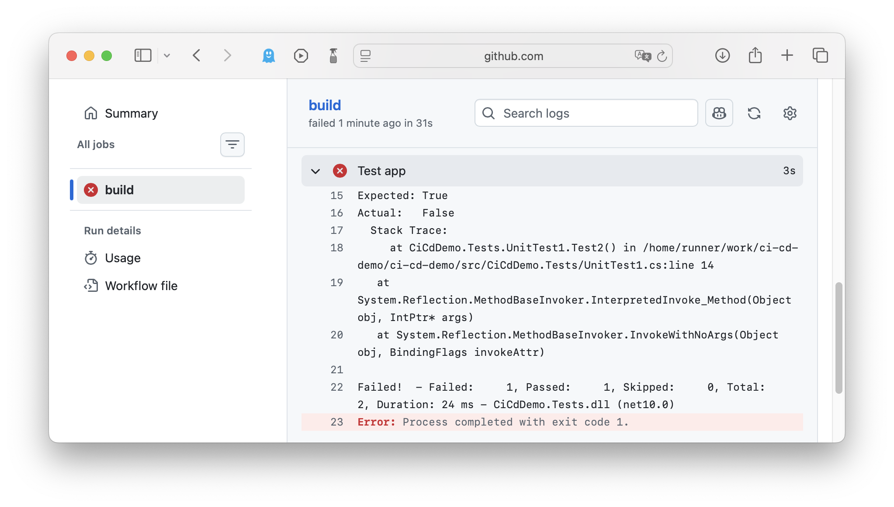
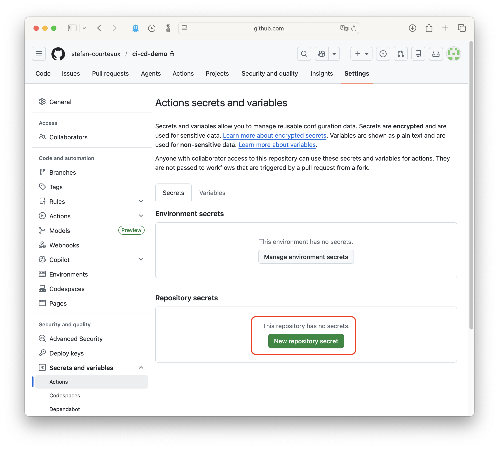
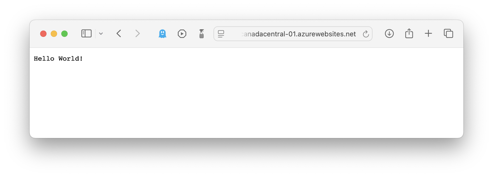

GitHub Actions (CI/CD Pipelines)
| Deze pagina gebruikt dotnet CLI om snel te gaan. Je mag uiteraard alles met IDE doen. |
Introductie
GitHub Actions zijn geautomatiseerde processen die als overkoepelend doel hebben efficiënter en betrouwbaarder software te bouwen en op te leveren. Het combineert drie belangrijke concepten:
- Continuous Integration (CI)
-
Codewijzigingen worden regelmatig samengevoegd. Hierdoor kunnen fouten of conflicten zo snel mogelijk worden opgespoord en opgelost.
- Continuous Delivery (CD)
-
Geteste code wordt automatisch gedeployed naar verschillende omgevingen, zoals test- of productieomgevingen.
- Automated Testing
-
Tests worden uitgevoerd om de kwaliteit van de code te waarborgen.
De Actions worden gedefinieerd in yaml.
| Het analoge concept in Azure DevOps heet Pipelines. |
Build
stefancourteaux@MacBookPro ci-cd-demo % pwd /Users/stefancourteaux/Source/GitHub/ci-cd-demo
stefancourteaux@MacBookPro ci-cd-demo % mkdir src stefancourteaux@MacBookPro ci-cd-demo % cd src stefancourteaux@MacBookPro src % dotnet new web -o CiCdDemo.Api The template "ASP.NET Core Empty" was created successfully.
var builder = WebApplication.CreateBuilder(args);
var app = builder.Build();
app.MapGet("/", () => "Hello World!");
app.Run();stefancourteaux@MacBookPro ci-cd-demo % pwd /Users/stefancourteaux/Source/GitHub/ci-cd-demo
stefancourteaux@MacBookPro ci-cd-demo % mkdir .github stefancourteaux@MacBookPro ci-cd-demo % cd .github stefancourteaux@MacBookPro .github % mkdir workflows stefancourteaux@MacBookPro .github % cd workflows stefancourteaux@MacBookPro workflows % touch ci-cd-demo.yml
.
├── .github
│ └── workflows
│ └── ci-cd-demo.yml
└── src
└── CiCdDemo.Api
├── appsettings.Development.json
├── appsettings.json
├── CiCdDemo.Api.csproj
├── obj
├── Program.cs
└── Properties
└── launchSettings.json
name: CI-CD-Demo
on:
push:
branches:
- main (1)
workflow_dispatch: (2)
jobs:
build:
runs-on: ubuntu-latest
steps:
- name: Clone repo
uses: actions/checkout@v4 (3)
- name: Install dotnet
uses: actions/setup-dotnet@v4 (4)
with:
dotnet-version: "10.0.x"
- name: Build app
run: dotnet build src/CiCdDemo.Api/CiCdDemo.Api.csproj (5)| 1 | Workflow zal triggeren op push naar main. |
| 2 | Workflow kan ook manueel getriggered worden. |
| 3 | Check code uit. |
| 4 | Voorzie dotnet SDK |
| 5 | Build app. |
Commit en push de repo naar GitHub.
-
De instructies worden opgepikt.
-
De workflow wordt uitgevoerd.
-
Het resultaat is te vinden onder "Actions"

Test
stefancourteaux@MacBookPro src % pwd /Users/stefancourteaux/Source/GitHub/ci-cd-demo/src
stefancourteaux@MacBookPro src % dotnet new xunit -o CiCdDemo.Tests The template "xUnit Test Project" was created successfully.
stefancourteaux@MacBookPro src % dotnet new sln --name CiCd.sln The template "Solution File" was created successfully.
stefancourteaux@MacBookPro src % dotnet sln add CiCdDemo.Api Project `CiCdDemo.Api/CiCdDemo.Api.csproj` added to the solution. stefancourteaux@MacBookPro src % dotnet sln add CiCdDemo.Tests Project `CiCdDemo.Tests/CiCdDemo.Tests.csproj` added to the solution.
.
└── src
├── CiCd.sln.slnx
├── CiCdDemo.Api
│ ├── appsettings.Development.json
│ ├── appsettings.json
│ ├── bin
│ ├── CiCdDemo.Api.csproj
│ ├── obj
│ ├── Program.cs
│ └── Properties
│ └── launchSettings.json
└── CiCdDemo.Tests
├── bin
├── CiCdDemo.Tests.csproj
├── obj
└── UnitTest1.cs
namespace CiCdDemo.Tests;
public class UnitTest1
{
[Fact]
public void Test1()
{
Assert.True(true);
}
[Fact]
public void Test2()
{
Assert.True(false);
}
}name: CI-CD-Demo
on:
push:
branches:
- main
workflow_dispatch:
jobs:
build:
runs-on: ubuntu-latest
steps:
- name: Clone repo
uses: actions/checkout@v4
- name: Install dotnet
uses: actions/setup-dotnet@v4
with:
dotnet-version: "10.0.x"
- name: Build app
run: dotnet build src/CiCd.slnx (1)
- name: Test app
run: dotnet test src/CiCdDemo.Tests/CiCdDemo.Tests.csproj (2)| 1 | Builden nu solution ipv project |
| 2 | Runnen tests |
De details van deze workflow executie bevestigen het falen van de test.

Naargelang configuratie zal je hier via e-mail een melding van ontvangen.
Deploy
| Er zijn veel verschillende tools en manieren om services naar Azure te deployen. Je bent uiteraard totaal vrij om te experimenteren. Niet elke aanpak zal werken met Azure For Students of andere moving parts in jouw setup. Onderstaande zou voor iedereen moeten werken. |
Maak manueel een nieuwe app service in Azure.
-
Vul onder "Basics" the usual in.
-
Onder "Deployment" enable je "Basic authentication"
Klik op "Review+Create". Valideer en create.
Klik in de App Service "Overview" op "Download publish profile".
Stop de inhoud van het publish profile in een Repo Secret in GitHub.

Kies een logische naam en gebruik die in jouw pipeline
name: CI-CD-Demo
on:
push:
branches:
- main
workflow_dispatch:
jobs:
build:
runs-on: ubuntu-latest
steps:
- name: Clone repo
uses: actions/checkout@v4
- name: Install dotnet
uses: actions/setup-dotnet@v4
with:
dotnet-version: "10.0.x"
- name: Build app
run: dotnet build src/CiCd.slnx
- name: Test app
run: dotnet test src/CiCdDemo.Tests/CiCdDemo.Tests.csproj
- name: Publish
run: dotnet publish src/CiCdDemo.Api/CiCdDemo.Api.csproj -o ${{ github.workspace }}/publish (1)
- name: Deploy
uses: azure/webapps-deploy@v3
with:
app-name: "stefanc-ci-cd-demo" (2)
publish-profile: ${{ secrets.DEMO_PUBLISH_PROFILE }} (2)
package: ${{ github.workspace }}/publish| 1 | Je hoeft niet te werken met workspace env var en publish -o target, maar dan moet je de output diep in de project structuur gaan zoeken. |
| 2 | Let er op dat dit matcht met jouw naamgeving. |
| Standaard zal de workflow niet verder gaan wanneer de tests falen. |
